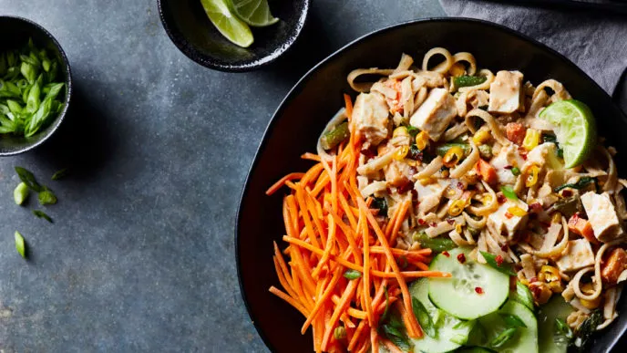

Pad Thai With Tofu

Description
A whole-food plany bast take on this classic Thai dish that is easy to make and good for you and the planet.
Ingredients
- 1 300 gram package extra-firm light silken tofu
- ⅓ cup no-salt-added peanut butter
- 3 tablespoons lime juice
- 4 cloves garlic, minced
- ½ teaspoon crushed red pepper
- 1 cup chopped onion
- 2 cups bag frozen mixed vegetables
- 4 cups fresh baby spinach
- 225 grams wide brown rice noodles
- Sea salt, to taste
- 1 medium cucumber, thinly sliced
- ½ cup shredded carrot
- ¼ cup sliced scallions
- 1 fresh Thai chile, thinly sliced (optional)
- Lime, cut into wedges
Steps
- Place tofu between paper towels; add a weight on top and press 15 minutes. Cut tofu into ½-inch cubes.
- For sauce, in a small bowl whisk together peanut butter, lime juice, garlic, crushed red pepper,
and 1 cup water.
- In an extra-large skillet cook onion over medium 2 to 3 minutes, stirring occasionally and adding water,
1 to 2 tablespoons at a time, as needed to prevent sticking. Add mixed vegetables; cook 3 minutes or until
almost tender. Stir in spinach; cook until wilted.
- Meanwhile, cook noodles according to package directions. Drain well. Add noodles, tofu, and sauce to
vegetables, tossing to mix well. Season with salt.
- Arrange noodle mixture, cucumber, carrot, scallions, and Thai chile (if using) in bowls. Serve with lime
wedges.
Time taken: About 30 minutes
Back home